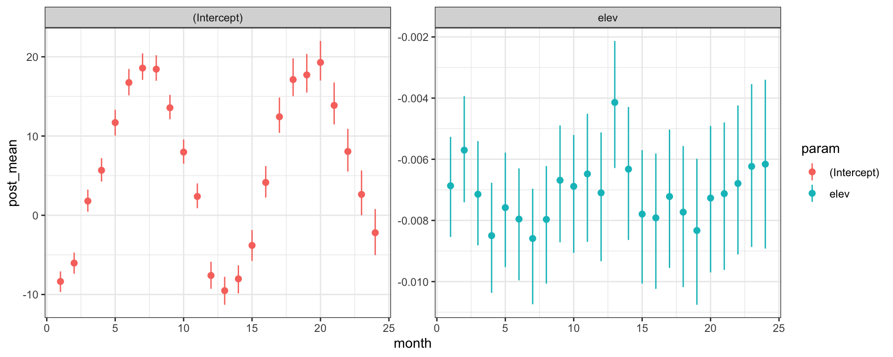
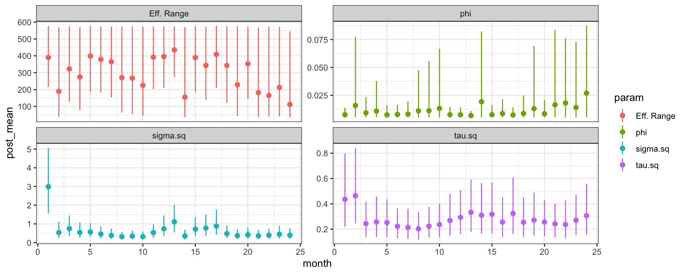
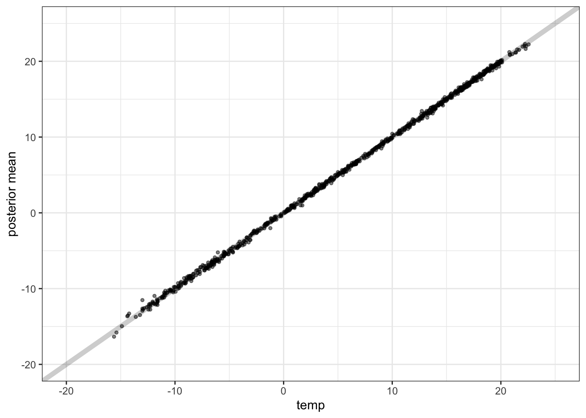
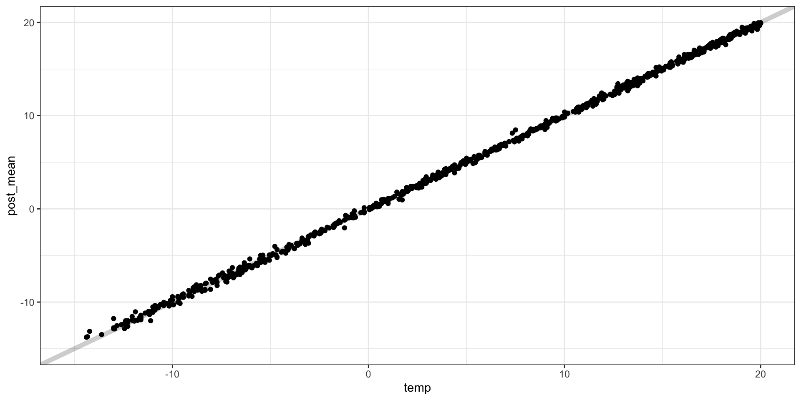
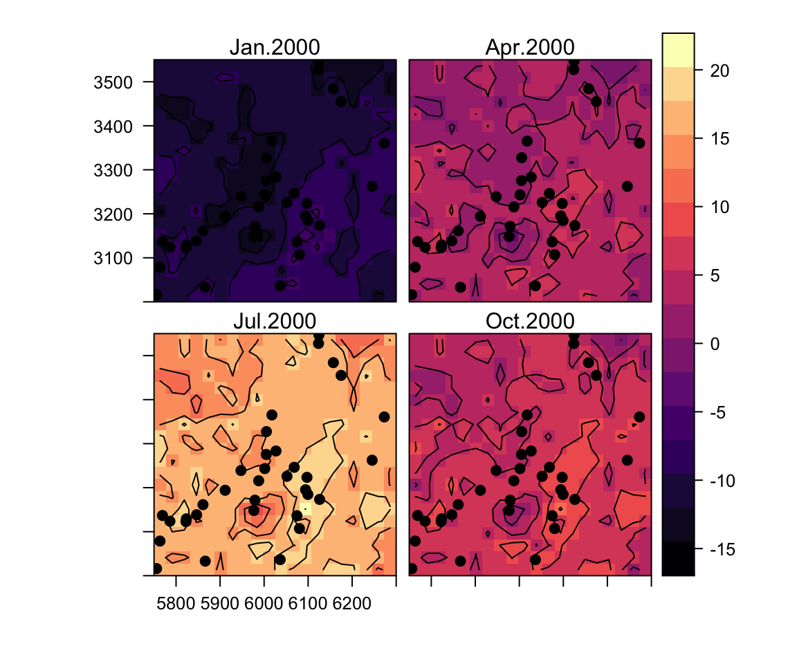
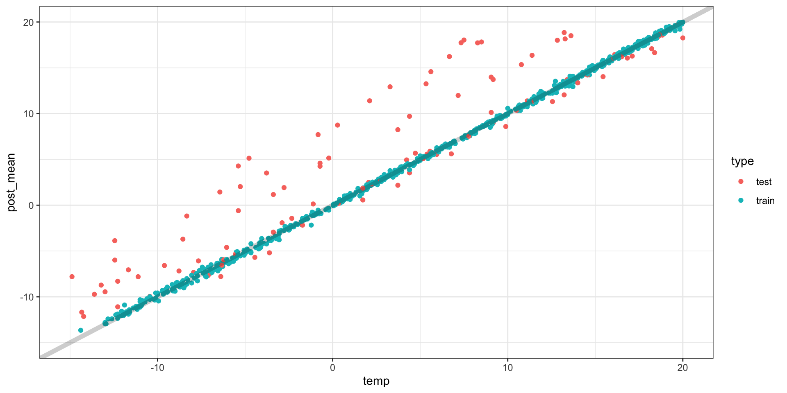

n_samples =10000models =lapply(paste0("t_",1:24, "~elev"), as.formula)m = spBayes::spDynLM( models, data = ne_temp, coords = coords, get.fitted =TRUE,starting = starting, tuning = tuning, priors = priors,cov.model ="exponential", n.samples = n_samples, n.report =1000)## ----------------------------------------## General model description## ----------------------------------------## Model fit with 34 observations in 24 time steps.## ## Number of missing observations 0.## ## Number of covariates 2 (including intercept if specified).## ## Using the exponential spatial correlation model.## ## Number of MCMC samples 10000.#### ...
Posterior Inference - \(\beta\)s

Posterior Inference - \(\theta\)

Posterior Inference - Observed vs. Predicted

Prediction
spPredict does not support spDynLM objects but it will impute missing values.
models_pred =lapply(paste0("t_",1:n_t, "~1"), as.formula)n_samples =5000m_pred = spBayes::spDynLM( models_pred, data = pred, coords = coords_pred, get.fitted =TRUE,starting = starting, tuning = tuning, priors = priors,cov.model ="exponential", n.samples = n_samples, n.report =1000)## ----------------------------------------## General model description## ----------------------------------------## Model fit with 434 observations in 24 time steps.## ## Number of missing observations 9600.## ## Number of covariates 1 (including intercept if specified).## ## Using the exponential spatial correlation model.## ## Number of MCMC samples 5000.
Predictive performance

Predictive surfaces

Out-of-sample validation
# A tibble: 34 × 29
x y elev type station t_1 t_10 t_11 t_12 t_13
<dbl> <dbl> <int> <chr> <int> <dbl> <dbl> <dbl> <dbl> <dbl>
1 6.09 3.20 102 test 1 NA NA NA NA NA
2 6.25 3.26 1 train 2 -6.28 8.89 3.89 -4.22 -7.11
3 6.16 3.48 157 train 3 -11.1 6.44 1.94 -8.72 -11.6
4 6.12 3.53 176 train 4 -11.6 5.94 1.67 -9.17 -11.8
5 6.00 3.28 400 train 5 -12.6 5.67 0.278 -10.7 -11.9
6 6.05 3.23 133 train 6 -9.11 7.56 2.44 -7.11 -9.44
7 6.10 3.18 56 test 7 NA NA NA NA NA
8 6.07 3.14 59 train 8 -6.56 9.61 4.17 -4.89 -6.06
9 6.17 3.46 160 train 9 -9.94 6.67 1.72 -8.44 -12.1
10 6.01 3.33 360 train 10 -12.3 6.39 0.944 -10.6 -11.6
# … with 24 more rows, and 19 more variables: t_14 <dbl>, t_15 <dbl>,
# t_16 <dbl>, t_17 <dbl>, t_18 <dbl>, t_19 <dbl>, t_2 <dbl>,
# t_20 <dbl>, t_21 <dbl>, t_22 <dbl>, t_23 <dbl>, t_24 <dbl>,
# t_3 <dbl>, t_4 <dbl>, t_5 <dbl>, t_6 <dbl>, t_7 <dbl>, t_8 <dbl>,
# t_9 <dbl>

Spatio-temporal models for continuous time
Additive Models
In general, spatiotemporal models will have a form like the following,
these are straight forward to fit and interpret but are quite limiting (no shared information between space and time).
Spatiotemporal Covariance
Lets assume that we want to define our spatiotemporal random effect to be a single stationary Gaussian Process (in 3 dimensions\(^\star\)), \[
\boldsymbol{w}(\boldsymbol{s},\boldsymbol{t}) \sim \mathcal{N}\big(\boldsymbol{0}, \boldsymbol{\Sigma}(\boldsymbol{s},\boldsymbol{t})\big)
\] where our covariance function depends on both \(\lVert s-s'\rVert\) and \(\lvert t-t'\rvert\), \[
\text{cov}(\boldsymbol{w}(\boldsymbol{s},\boldsymbol{t}), \boldsymbol{w}(\boldsymbol{s}',\boldsymbol{t}')) = c(\lVert s-s'\rVert, \lvert t-t'\rvert)
\]
Note that the resulting covariance matrix \(\Sigma\) will be of size \(n_s \cdot n_t \times n_s \cdot n_t\).
Even for modest problems this gets very large (past the point of direct computability).
If \(n_t = 52\) and \(n_s = 100\) we have to work with a \(5200 \times 5200\) covariance matrix
Separable Models
One solution is to use a seperable form, where the covariance is the product of a valid 2d spatial and a valid 1d temporal covariance / correlation function, \[
\text{cov}(\boldsymbol{w}(\boldsymbol{s},\boldsymbol{t}), \boldsymbol{w}(\boldsymbol{s}',\boldsymbol{t}')) = \sigma^2 \, \rho_1(\lVert \boldsymbol{s}-\boldsymbol{s}'\rVert;\boldsymbol{\theta}) \, \rho_2(\lvert \boldsymbol{t}-\boldsymbol{t}' \rvert; \boldsymbol{\phi})
\]
If we define our observations as follows (stacking time locations within spatial locations)
If we have a spatiotemporal random effect with a separable form, \[
\boldsymbol{w}(\boldsymbol{s},\boldsymbol{t}) \sim \mathcal{N}(\boldsymbol{0},\, \boldsymbol{\Sigma}_w)
\]\[
\boldsymbol{\Sigma}_w = \sigma^2 \, \boldsymbol{H}_s \otimes \boldsymbol{H}_t
\]
then the likelihood for \(\boldsymbol{w}\) is given by